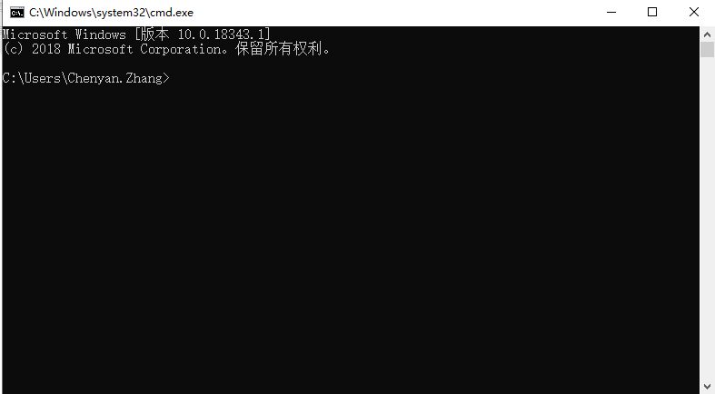
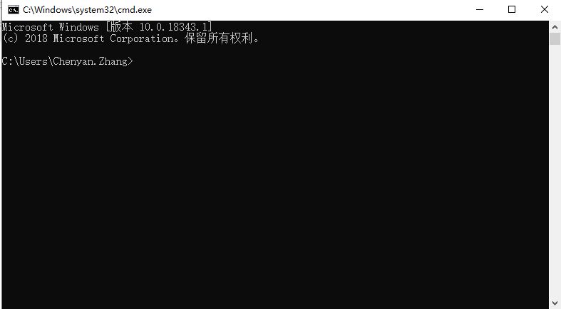

5. 常见问题解答¶
5.1. 1.为什么掌控板无法连接SIoT？¶
造成掌控板无法连接SIoT的原因很多，一般要从这几个方面进行检查：
运行SIoT的电脑，是否正常启用了1883端口。
建议用MQTT客户端程序来访问SIoT，如手机端的MQTTool、电脑端的MQTTbox，确认MQTT服务是否正常。如果不正常，建议关闭各种防火墙软件，尤其是360。
5.2. 2.如何获取电脑的IP地址？¶
电脑每次连接WIFI，都会生成一个IP地址，每个IP地址所对应的电脑是唯一的。运行SIOT程序后会在电脑上建立一个SIOT服务器，其他设备要访问这个服务器，需要知道这个SIOT服务器所在电脑的IP地址。
获取电脑IP的方法有很多，可在网页上搜索到，下面我们来介绍其中一种简易操作方法，通过以下3步获取电脑IP地址。
1）同时按下键盘上“WIN”+“R”，弹出如下运行窗口。

2）输入“cmd”，点击确定，弹出小黑框。
 

3）在小黑框中输入“ipconfig”，点击键盘“enter”，在小黑框中可以看到IP地址，如下图IP为192.168.9.191。

注意：每次连接不同的WIFI，电脑的IP地址都可能会发生变化，需要通过上述方法重新获取。